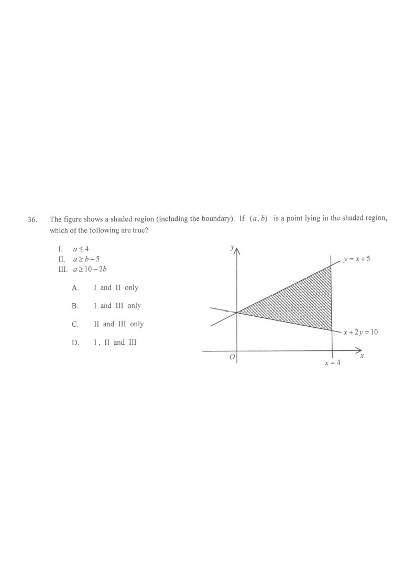

Drag the red point to test any point $(a,b)$ in the shaded region.
Shaded region (feasible)Line $x=4$Line $y=x+5$Line $x+2y=10$Test point
The figure shows a shaded region (including the boundary). If $(a,b)$ is a point lying in the shaded region, which of the following are true?
I. $a \le 4$
II. $a \ge b-5$
III. $a \ge 10-2b$
A. I and II onlyB. I and III onlyC. II and III onlyD. I, II and III

Figure (original exam diagram)
Step 1
Read off the three boundary lines
The shaded region is bounded by three straight lines:
the vertical line $x=4$ on the right,
the upper line $y=x+5$,
the lower line $x+2y=10$.
Hint: The region touches the boundary, so the boundary lines are included — inequalities are $\le$ / $\ge$ (not strict).
Step 2
Turn the region into a system of inequalities
Half-Plane of a Linear Inequality\(y\le mx+c\ \text{is the half-plane below the line}\ y=mx+c\)The shaded region lies below \(y=x+5\), so every point in it has \(b\le a+5\).
From the sketch the shaded region lies left of $x=4$, below $y=x+5$ and above $x+2y=10$:
$$\begin{cases} x \le 4 \\[2pt] y \le x+5 \\[2pt] x+2y \ge 10 \end{cases}$$
Hint: Substitute a point inside the region, e.g. $(4,4)$: $4\le4$ ✓, $4\le9$ ✓, $4+8=12\ge10$ ✓.
Step 3
Substitute the point $(a,b)$
Non-Strict Inequality (boundary included)\(x\le 4\ \text{includes the line}\ x=4\)The region includes its boundary, so the point \((4,4)\) on \(x=4\) satisfies \(a\le4\).
Since $(a,b)$ lies in the shaded region, it satisfies all three inequalities. Replace $x\to a$, $y\to b$:
$$\begin{cases} a \le 4 \\[2pt] b \le a+5 \\[2pt] a+2b \ge 10 \end{cases}$$
Hint: This is the only translation step — keep the same inequality signs.
Step 4
Rearrange into the required forms
Rearranging an Inequality\(A+B\ge C\ \Leftrightarrow\ A\ge C-B\)Subtracting \(2b\) from \(a+2b\ge10\) produces the form \(a\ge10-2b\).
From $b \le a+5$, subtract $5$ from both sides: $b-5 \le a$, i.e. $a \ge b-5$.
From $a+2b \ge 10$, subtract $2b$: $a \ge 10-2b$.
$$\begin{cases} a \le 4 \\[2pt] a \ge b-5 \\[2pt] a \ge 10-2b \end{cases}$$
Step 5
Compare with the three statements
I. $a\le4$ ← matches the first inequality ✓
II. $a\ge b-5$ ← matches the rearranged second inequality ✓
III. $a\ge 10-2b$ ← matches the rearranged third inequality ✓
Therefore all three statements are true.
Hint: Numerical check at $(4,4)$: I: $4\le4$ ✓; II: $4\ge-1$ ✓; III: $4\ge2$ ✓ — and every vertex and interior point gives the same conclusion.
AnswerD (I, II and III)
PRACTICESimilar question — try it yourself
Question. A point \((p,q)\) lies in the region bounded by \(p\le3\), \(q\le2p+1\) and \(p+3q\ge12\), with the boundary included. Which of the following must be true? I. \(p\le3\) \quad II. \(p\ge\dfrac{q-1}{2}\) \quad III. \(p\ge12-3q\)
Show the worked solution
Step 1. Statement I is the first inequality itself, and the boundary is included, so \(p\le3\) ✓.
Step 2. From \(q\le2p+1\): subtract \(1\) and divide by \(2\), giving \(p\ge\dfrac{q-1}{2}\) ✓ — statement II.
Step 3. From \(p+3q\ge12\): subtract \(3q\) from both sides, giving \(p\ge12-3q\) ✓ — statement III.
Step 4. Check with the boundary point \((3,3)\): \(3\le3\) ✓, \(3\le2(3)+1=7\) ✓, \(3+9=12\ge12\) ✓, so all three statements hold.